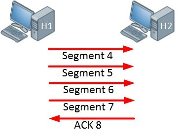
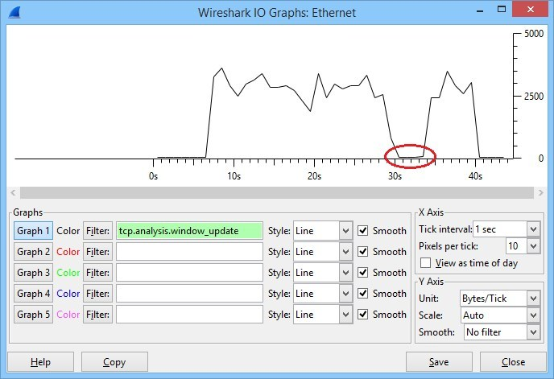
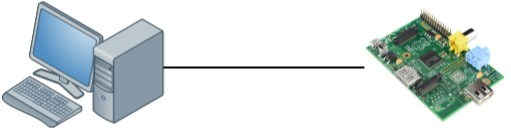
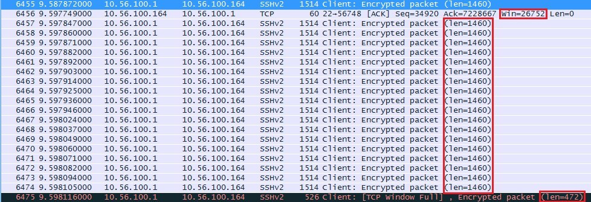
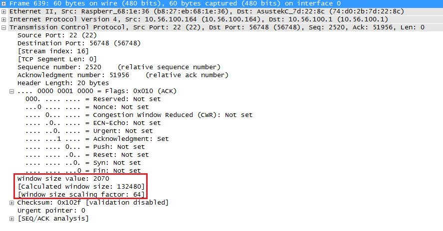
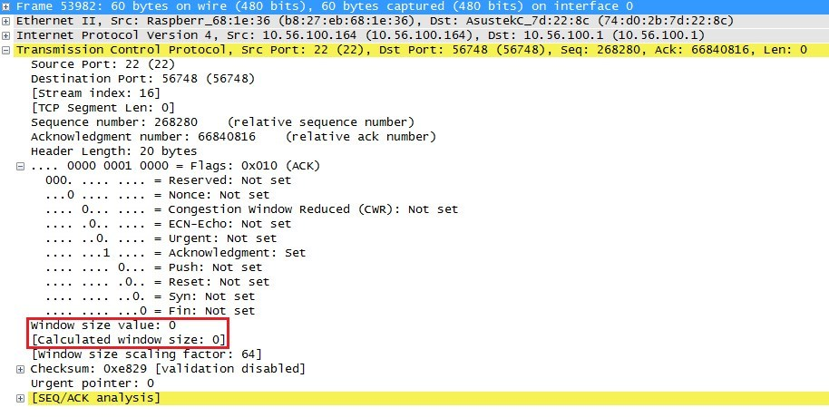
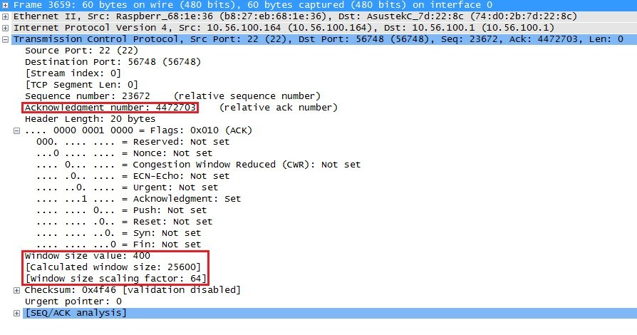
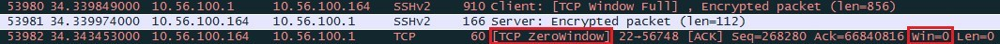

Unit 2: Network Fundamentalsالوحدة الثانية: أساسيات الشبكات
TCP Window Size Scaling
Understanding how TCP manages traffic flow and congestionفهم كيفية إدارة TCP لتدفق البيانات والازدحام
Quick recap quizاختبار مراجعة سريع
What is TCP Windowing?ما هو نظام Windowing في TCP؟
SOURCE MATERIALالنص الأصلي من المرجع
TCP (Transmission Control Protocol) is a connection oriented protocol which means that we keep track of how much data has been transmitted. The sender will transmit some data and the receiver has to acknowledge it. When we don't receive the acknowledgment in time then the sender will re-transmit the data.
بروتوكول TCP هو بروتوكول موجه للاتصال (Connection-oriented)، مما يعني أننا نتتبع كمية البيانات التي تم إرسالها. المرسل يقوم بإرسال بعض البيانات ويجب على المستقبل تأكيد استلامها (Acknowledge). إذا لم نستلم التأكيد في الوقت المحدد، سيقوم المرسل بإعادة إرسال البيانات.
TCP uses 'windowing' which means that a sender will send one or more data segments and the receiver will acknowledge one or all segments. When we start a TCP connection, the hosts will use a receive buffer where we temporarily store data before the application can process it.
يستخدم TCP نظام 'النافذة' (Windowing)، مما يعني أن المرسل سيرسل جزءاً أو أكثر من البيانات (segmentsأجزاء البيانات في طبقة النقل) وسيقوم المستقبل بتأكيد استلام جزء واحد أو كل الأجزاء. عند بدء اتصال TCP، تستخدم الأجهزة 'ذاكرة تخزين مؤقت للاستقبال' (Receive Buffer) لتخزين البيانات مؤقتاً قبل أن يعالجها التطبيق.
When the receiver sends an acknowledgment, it will tell the sender how much data it can transmit before the receiver will send an acknowledgment. We call this the window size. Basically, the window size indicates the size of the receive buffer.
عندما يرسل المستقبل تأكيداً، فإنه يخبر المرسل بكمية البيانات التي يمكنه إرسالها قبل أن يرسل المستقبل تأكيداً آخر. نطلق على هذا اسم 'حجم النافذة' (Window Size). باختصار، حجم النافذة يشير إلى حجم ذاكرة الاستقبال المؤقتة.
Typically the TCP connection will start with a small window size and every time when there is a successful acknowledgement, the window size will increase.
عادةً، يبدأ اتصال TCP بحجم نافذة صغير، وفي كل مرة يتم فيها تأكيد الاستلام بنجاح، يزداد حجم النافذة.
Host 1
Segment 1 →
← ACK 2
← ACK 2
Host 2
Host 1
Segment 2, 3 →
← ACK 4
← ACK 4
Host 2
Host 1
Segment 4, 5, 6, 7 →
← ACK 8
← ACK 8
Host 2
TCP Window Size increasing successfullyحجم نافذة TCP يزداد بنجاح بعد كل تأكيد
In the example above the window size keeps increasing as long as the receiver sends acknowledgments for all our segments or when the window size hits a certain maximum limit. When the receiver doesn't send an acknowledgment within a certain time period (called the round-trip time) then the window size will be reduced.
في المثال السابق، يستمر حجم النافذة في الزيادة طالما أن المستقبل يرسل تأكيدات لكل أجزاء البيانات أو حتى يصل حجم النافذة إلى الحد الأقصى. عندما لا يرسل المستقبل تأكيداً خلال فترة زمنية معينة (تسمى Round-Trip Time)، يتم تقليل حجم النافذة.
AUTHOR NOTEملاحظة إضافية للتوضيح
Think of TCP Window Size like a conversation. You start speaking slowly (small window). If the listener nods and understands (ACKs), you start speaking faster and give more information at once (increasing window). But if the listener looks confused and asks you to repeat (missing ACK or timeout), you slow down again to make sure they can process what you're saying.
تخيل حجم النافذة في TCP مثل المحادثة. تبدأ بالتحدث ببطء (نافذة صغيرة). إذا كان المستمع يهز رأسه ويفهمك (يرسل ACK)، تبدأ في التحدث بشكل أسرع وتعطيه معلومات أكثر في نفس الوقت (زيادة النافذة). ولكن إذا بدا المستمع مرتبكاً وطلب منك الإعادة (عدم وصول ACK أو تأخير)، ستقوم بإبطاء سرعتك مرة أخرى للتأكد من قدرته على استيعاب ما تقوله.
Congestion and TCP Slow Startالازدحام وبداية TCP البطيئة
SOURCE MATERIALالنص الأصلي من المرجع
When an interface has congestion then it's possible that IP packets are dropped. To deal with this, TCP has a number of algorithms that deal with congestion control. One of them is called slow startخوارزمية البداية البطيئة لتفادي الازدحام.
عندما يحدث ازدحام (Congestion) في الواجهة، فمن المحتمل أن تُفقد حزم الـ IP. للتعامل مع هذا، يحتوي TCP على عدة خوارزميات للتحكم في الازدحام. إحداها تسمى 'البداية البطيئة' (Slow Startيبدأ بحجم صغير ويتضاعف حتى يحدث ازدحام).
Congestion occurs when the interface has to transmit more data than it can handle. Its queue(s) will hit a limit and packets will be dropped.
يحدث الازدحام عندما تضطر الواجهة إلى نقل بيانات أكثر مما تستطيع معالجته. حيث تصل طوابير الانتظار (Queues) إلى حدها الأقصى وتُفقد الحزم.
With TCP slow start, the window size will initially grow exponentially (window size doubles) but once a packet is dropped, the window size will be reduced to one segment. It will then grow exponentially again until the window size is half of what it was when the congestion occurred. At that moment, the window size will grow linearly instead of exponentially.
مع خوارزمية TCP Slow Start، ينمو حجم النافذة في البداية بشكل أسي (يتضاعف الحجم)، ولكن بمجرد فقدان حزمة، يتم تقليل حجم النافذة إلى جزء واحد (Segment) فقط. ثم ينمو بشكل أسي مرة أخرى حتى يصل إلى نصف الحجم الذي كان عليه عند حدوث الازدحام. في تلك اللحظة، سينمو حجم النافذة بشكل خطي بدلاً من النمو الأسي.
TCP Global Synchronizationالمزامنة الشاملة لبروتوكول TCP
SOURCE MATERIALالنص الأصلي من المرجع
When an interface gets congested, it's possible that all your TCP connections will experience TCP slow start. Packets will be dropped and then all TCP connections will have a small window size. This is called TCP global synchronizationمشكلة المزامنة الشاملة حيث تتباطأ كل الاتصالات معاً.
عندما تزدحم الواجهة، من المحتمل أن تواجه جميع اتصالات TCP لديك حالة البداية البطيئة. ستُفقد الحزم، وبعد ذلك سيصبح لكل اتصالات TCP حجم نافذة صغير. هذا يُسمى 'المزامنة الشاملة' (TCP Global Synchronizationانخفاض مفاجئ لسرعة كل الاتصالات في نفس الوقت).

Line graph showing multiple TCP connections dropping window sizes simultaneously when interface utilization peaks, resulting in poor average utilization.
Time
Bandwidth
The orange, blue and green lines are three different TCP connections. These TCP connections start at different times and after awhile, the interface gets congested and packets of all TCP connections are dropped. What happens is that the window size of all these TCP connections will drop to one and once the interface congestion is gone, all their window sizes will increase again.
الخطوط البرتقالي والأزرق والأخضر تمثل ثلاثة اتصالات TCP مختلفة. تبدأ في أوقات مختلفة، وبعد فترة، تزدحم الواجهة وتُفقد حزم من كل الاتصالات. ما يحدث هو أن حجم النافذة لكل هذه الاتصالات ينخفض إلى 1، وبمجرد زوال الازدحام، تزداد أحجام النوافذ مرة أخرى.
The interface then gets congested again, the window size drops back to one and the story repeats itself. The result of this is that we don't use all the available bandwidth that our interface has to offer. If you look at the dashed line you can see that the average interface utilization isn't very high.
ثم تزدحم الواجهة مرة أخرى، وينخفض حجم النافذة إلى 1 وتتكرر القصة. نتيجة لذلك، لا نستخدم كل النطاق الترددي (Bandwidth) المتاح في الواجهة. إذا نظرت إلى الخط المتقطع، يمكنك أن ترى أن متوسط استخدام الواجهة ليس عالياً جداً.
To prevent global synchronization we can use RED (Random Early Detection)تقنية كشف الازدحام المبكر العشوائي. This is a feature that drops 'random' packets from TCP flows based on the number of packets in a queue and the TOS (Type of Service) marking of the packets. When packets are dropped before a queue is full, we can avoid the global synchronization.
لمنع المزامنة الشاملة، يمكننا استخدام تقنية REDRandom Early Detection. هذه الميزة تقوم بإسقاط حزم 'عشوائية' من تدفقات TCP بناءً على عدد الحزم في طابور الانتظار وعلامات TOS. عندما يتم إسقاط الحزم قبل امتلاء الطابور، يمكننا تجنب المزامنة الشاملة.

Graph showing smoothed out TCP window sizes resulting in a much higher average interface utilization thanks to RED dropping random packets early.
Time
Bandwidth
When we use RED, our average interface utilization will improve.
عند استخدام RED، سيتحسن متوسط استخدامنا للواجهة بشكل كبير.
AUTHOR NOTEملاحظة إضافية للتوضيح
Tail Drop vs RED: Imagine a highway toll booth. 'Tail drop' is when the toll plaza is completely full, so they suddenly block the entire highway, causing a massive traffic jam for everyone at once (Global Sync). 'RED' is like a smart traffic cop who randomly pulls over a few cars early on before the plaza fills up. Those few cars slow down, but the highway keeps flowing smoothly.
Tail Drop مقابل RED: تخيل بوابة رسوم مرور على طريق سريع. 'Tail drop' يحدث عندما تمتزئ الساحة بالكامل، فيقومون فجأة بإغلاق الطريق السريع بأكمله، مما يتسبب في زحام مروري هائل للجميع في نفس الوقت (وهذا هو Global Sync). أما 'RED' فهو كشرطي مرور ذكي يقوم بإيقاف عدد قليل من السيارات عشوائياً في وقت مبكر قبل امتلاء الساحة. تلك السيارات القليلة تبطئ سرعتها، لكن الطريق السريع يستمر في التدفق بسلاسة. في الـ CCNA غالباً ستُسأل عن WRED وهو نفس الشيء ولكنه يختار الحزم التي سيسقطها بناءً على الأولوية (أولوية مرور أقل تسقط أولاً).
Wireshark Capturesتحليل باستخدام Wireshark
SOURCE MATERIALالنص الأصلي من المرجع
Now you have an idea what the TCP window size is about, let's take a look at a real example of how the window size is used. We can use Wireshark for this. To examine the TCP window size I will use two devices:
الآن أصبحت لديك فكرة عن حجم النافذة في TCP، دعنا نلقي نظرة على مثال حقيقي لكيفية استخدامه باستخدام برنامج Wireshark. لفحص ذلك، سأستخدم جهازين:
The device on the left side is a modern computer with a gigabit interface. On the right side, we have a small raspberry pi which has a FastEthernet interface. The raspberry pi is a great little device but its cpu/memory/ethernet interface are limited. To get an interesting output, I will copy a large file through SSH from my computer to the raspberry pi which will be easily overburdened.
الجهاز على اليسار هو كمبيوتر حديث مزود بواجهة Gigabit. وعلى اليمين، لدينا جهاز Raspberry Pi صغير بواجهة FastEthernet وموارد محدودة. للحصول على نتيجة مثيرة للاهتمام، سأقوم بنسخ ملف كبير عبر SSH من الكمبيوتر إلى الـ Raspberry Pi، والذي سيتم إرهاقه بسهولة.


Wireshark IO graph showing a massive drop in window size around the 30-second mark during the file transfer.
Wireshark IO Graph [Window Size over Time]
|=====
| /\/\
| /\/\/\/\/ \__
|__/ \__
+--------------------------
|=====
| /\/\
| /\/\/\/\/ \__
|__/ \__
+--------------------------
In the graph above you can see the window size that was used during this connection. The file transfer started after about 6 seconds and you can see that the window size increased fast. It went up and down a bit but at around 30 seconds, it totally collapsed. After a few seconds it increased again and I was able to complete the file transfer.
في الرسم البياني، يمكنك رؤية حجم النافذة المستخدم. بدأ نقل الملف بعد 6 ثوانٍ وزاد حجم النافذة بسرعة. صعد ونزل قليلاً، ولكن عند الثانية 30 تقريباً، انهار تماماً. بعد بضع ثوانٍ زاد مرة أخرى واكتمل النقل.
My fast computer uses 10.56.100.1 and the raspberry pi uses 10.56.100.164. In the SYN,ACK message that the raspberry pi wants to use a window size of 29200. My computer wants to use a window size of 8388480 (win=65535 * ws=128) which is irrelevant now since we are sending data to the raspberry pi.
الكمبيوتر السريع يستخدم 10.56.100.1 والـ Raspberry Pi يستخدم 10.56.100.164. في رسالة SYN,ACK، يطلب الـ Raspberry Pi حجم نافذة 29200. بينما طلب الكمبيوتر 8388480 (لأنه يستخدم مُعامل تكبير Scaling Factor)، وهذا غير مهم حالياً لأننا نرسل البيانات إلى الـ Pi.

Originally the window size is a 16 bit value so the largest window size would be 65535. Nowadays we use a scaling factor so that we can use larger window sizes.
في الأصل، حجم النافذة هو قيمة مكونة من 16 بت، لذا فإن الحد الأقصى لحجم النافذة هو 65535. في الوقت الحاضر، نستخدم معامل تكبير (Scaling Factor) حتى نتمكن من استخدام أحجام نوافذ أكبر.

At around the 10 second mark the window size decreased. The raspberry pi seems to have trouble keeping up and its receive buffer is probably full. It tells the computer to use a window size of 26752 from now on.
عند علامة الـ 10 ثوانٍ، انخفض حجم النافذة. يبدو أن جهاز Raspberry Pi يواجه صعوبة في المواكبة وربما امتلأت ذاكرة الاستقبال المؤقتة لديه. لذا يخبر الكمبيوتر باستخدام حجم نافذة 26752 من الآن فصاعداً.
The computer sends 18 segments with 1460 bytes and one segment of 472 bytes (26752 bytes in total). The last packet shows us 'TCP Window Full' message. This is something that Wireshark reports to us, our computer has completely filled the receive buffer of the raspberry pi.
يرسل الكمبيوتر 18 جزءاً بحجم 1460 بايت وجزءاً واحداً بحجم 472 بايت (المجموع 26752 بايت). يظهر لنا الحزمة الأخيرة رسالة 'TCP Window Full' في Wireshark، مما يعني أن الكمبيوتر ملأ ذاكرة الاستقبال للـ Raspberry Pi بالكامل.

Once the raspberry pi has caught up a bit and around the 30 second mark, something bad happens. The raspberry pi sends an ACK to the computer with a window size of 0.
بمجرد أن يواكب الـ Raspberry Pi العمل قليلاً، وحول علامة الـ 30 ثانية، يحدث شيء سيء. يرسل الـ Raspberry Pi إشارة ACK إلى الكمبيوتر بحجم نافذة يساوي صفر (0).

This means that the window size will remain at 0 for a specified amount of time, the raspberry pi is unable to receive any more data at this moment and the TCP transmission will be paused for awhile while the receive buffer is processed.
هذا يعني أن حجم النافذة سيبقى 0 لفترة محددة، فالـ Raspberry Pi غير قادر على استقبال أي بيانات إضافية حالياً، وسيتم إيقاف إرسال TCP مؤقتاً حتى يتم معالجة البيانات الموجودة في الذاكرة المؤقتة.

Once the receive buffer has been processed, the raspberry pi will send an ACK with a new window size (e.g. 25600). The window size is now only 25600 bytes but will grow again. The rest of the transmission went without any hiccups and the file transfer completed.
بمجرد معالجة الذاكرة المؤقتة، يرسل الـ Pi رسالة ACK بحجم نافذة جديد (مثلاً 25600). حجم النافذة الآن 25600 بايت فقط ولكنه سينمو مرة أخرى. مر باقي النقل بدون مشاكل واكتمل نقل الملف.
Conclusionالخاتمة
SOURCE MATERIALالنص الأصلي من المرجع
You have now seen how TCP uses the window size to tell the sender how much data to transmit before it will receive an acknowledgment. I also showed you an example of how the window size is used when the receiver is unable to process its receive buffer in time.
لقد رأيت الآن كيف يستخدم TCP حجم النافذة لإخبار المرسل بكمية البيانات التي يجب إرسالها قبل أن يتلقى تأكيداً. كما أظهرت لك مثالاً لكيفية استخدام حجم النافذة عندما يكون المستقبل غير قادر على معالجة الذاكرة المؤقتة في الوقت المناسب.
UDP, unlike TCP is a connectionless protocol and will just keep sending traffic. There is no window size, for this reason you might want to limit your UDP traffic or you might see starvation of your TCP traffic when there is congestion.
بروتوكول UDP، على عكس TCP، هو بروتوكول غير موجه للاتصال (Connectionless) وسيستمر في إرسال البيانات دون توقف. لا يوجد حجم نافذة فيه، ولهذا السبب قد ترغب في تقييد بيانات UDP الخاصة بك أو قد تواجه حالة حرمان (Starvation) لبيانات TCP الخاصة بك عندما يكون هناك ازدحام.
AUTHOR NOTEملاحظة إضافية للتوضيح
Starvation happens because TCP is polite: when there's congestion, TCP slows down (window size drops). UDP is impolite: it never slows down. So if they share a congested link, UDP will take all the bandwidth while TCP keeps reducing its speed, effectively starving TCP.
تحدث حالة الحرمان (Starvation) لأن TCP مهذب: عند وجود ازدحام، يبطئ TCP سرعته (يقل حجم النافذة). أما UDP فهو غير مهذب: لا يبطئ أبداً. لذا إذا تشاركا في رابط مزدحم، سيأخذ UDP كل النطاق الترددي بينما يستمر TCP في تقليل سرعته، مما يؤدي إلى حرمان TCP من الشبكة.
Lesson quizاختبار الدرس
Select an answer and check. You can toggle language for each question individually.اختر إجابة وتحقق. يمكنك تبديل اللغة لكل سؤال على حدة.